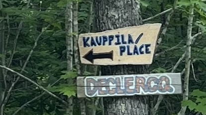
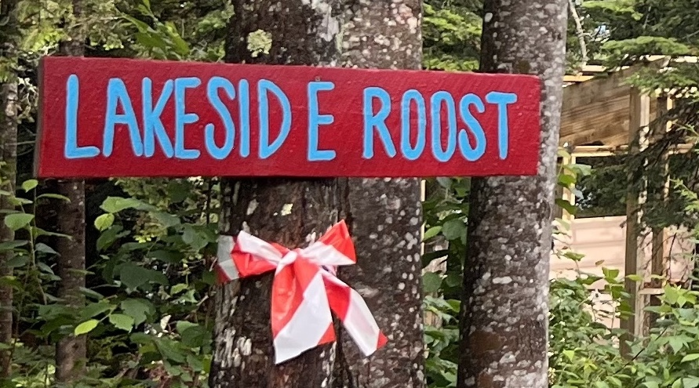

Medora Point
Lakeside Roost
Getting There
- Navigate to the driveway entrance.
- Look for a sign on a tree on the left side of the road that reads “Declercq”. Turn left into that driveway. 
- Pass the neighbor’s camp on your left. Smile and wave, but keep-er-movin.
- Follow the red and white streamers tied to the trees to guide you toward the campsite.
- You'll reach a sign that reads “Lakeside Roost”. Happy camping! 
Property Map

Download map
Food and Supplies Recommendations
This is a short list of our favorites close to Lake Medora, but there is a lot more out there. Get out and explore, or don’t, whatever!
Grocery
- Gas Lite General Store The Genny
Copper Harbor | Small store, but has the necessities.
Free Drinking Water
- Copper Harbor Visitor Center
Spigot on the wall near where you park.
Breakfast
- Mornin’ Sunshine
Copper Harbor | Food truck, some of the best breakfast in the Keweenaw. - Cafe Rosetta
Calumet | This one is a little far from the campsite, but a good spot to stop on your way out of town. A close tie for our favorite breakfast in the Keweenaw.
Lunch or Dinner
- Mount Bohemia
Lac La Belle | We go here weekly. Has a Nordic Spa (Saunas, steam room, hot tub, cold plunge, and showers) Also has good Pizza and serves beer. - Eagle Harbor Inn
Eagle Harbor | We love this place, check out the lighthouse while you’re there. - Lake Effect Bar and Grill
Copper Harbor | Good bar food, nothing too fancy. Live music sometimes!
Dinner
- Fitzgerald’s
Eagle River | Simply the best food in the Keweenaw. They also do Sunday brunch! Reservation required. Casual attire.
Hiking Trails Recommendations
A short list of our favorite trials near by — please do your own research ahead of time to see if the the trail is a good fit for you.
Traveled
- Mount Baldy / Nicole Bloom Memorial Trail — Incredible views from the top of a cliff.
- Estivant Pines Nature Sanctuary — Old-growth white pine forest with towering trees over 300 years old.
- Hunter's Point Park Trail — Scenic shoreline views along Lake Superior with rocky beaches.
- Mount Bohemia — Tour through the ski resort and enjoy some big cliff views.
Less Traveled
- Redwyn's Dunes — A short loop with lots of little ups and downs through the wooded dunes. Take a dip on the beach after!
- Bare Bluff Trail — Breathtaking forested views of Lake Superior from high bluffs.
- Horseshoe Harbor Trail — Remote coastal trail with rocky shores and unique rock formations.
Almost Never Traveled
BE AWARE: These "trails" are accessible only by 4x4 vehicles with a minimum of 8 inches of ground clearance. Hiking these trails without offline topographic maps is strongly discouraged. The trails are unmarked, not easily visible and no cell service. Provided links direct to the trailhead; navigation beyond that point is your responsibility and adventure to figure out.
- Haiti Peak — Steep uphill access path to the backside of Haiti Peak — Great views of Lake Medora and Lake Superior.
- Mount Houghton — Park on the Mandan and hike up the road to the trailhead. Steep uphill hike to the top. Big panaormic views at the top.
Happy hiking!